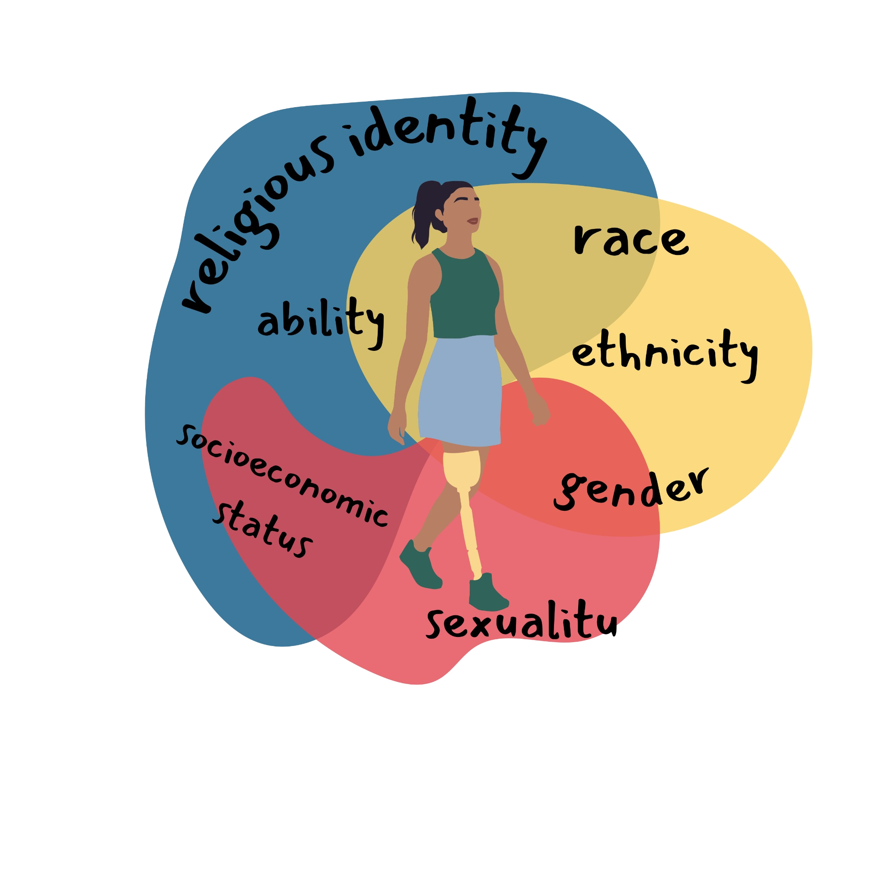

We’re exploring intersectionality in technology! We are learning how identity factors like race, gender, class, ability, religion, and sexuality overlap and shape experiences in tech. Come on in to meet our team, explore resources, and learn from inspiring role models.
Learn more about percentages of women in industry below, and these don’t even include subcategories like race or religion. Can you imagine how much lower the numbers get when identities intersect?